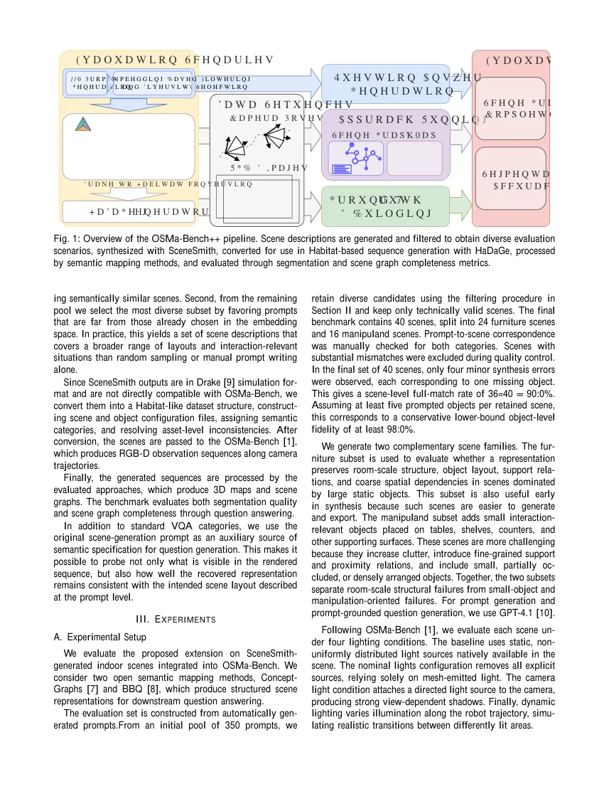

OSMa-Bench++：用提示生成合成场景来开放式评测语义地图OSMa-Bench++: Toward Open-Ended Benchmarking of Semantic Mapping for Manipulation with Prompt-Generated Synthetic Scenes
对开放词汇语义 SLAM 和机器人地图评测很有价值，尤其适合构造遮挡、小物体和杂乱场景；但它偏评测框架而非定位算法本身。
一句话工作总结
用文本提示自动生成可控合成场景，系统性压力测试语义地图在操作任务中的表现。
摘要
本文扩展 OSMa-Bench，用 prompt 生成的合成室内场景评测机器人操作所需的语义地图。流程会自动生成场景描述，用 SceneSmith 合成环境，并转换成 OSMa-Bench 兼容的仿真格式；中间需要处理语义归一化、材质纹理修复、shader fallback、地面与导航配置等问题。该框架让语义地图评测从固定数据集转向可控 corner case 生成。
Semantic mapping methods are increasingly used as intermediate scene representations for downstream robotic reasoning and manipulation, yet their evaluation is still largely tied to fixed benchmark datasets with limited coverage of manipulation-relevant corner cases. In this work, we extend OSMa-Bench toward controllable benchmarking with prompt-generated synthetic indoor scenes. Our pipeline automatically generates scene descriptions, synthesizes corresponding environments with SceneSmith, and adapts the resulting assets into an OSMa-Bench-compatible simulation format. This adaptation requires a nontrivial intermediate layer, including semantic normalization, material and texture repair, shader fallback policies, floor handling, navigation setup, and controlled lighting configuration. A key advantage of the proposed setup is that the original scene-generation prompt is known in advance and can therefore serve as an auxiliary semantic specification of the intended scene. We use this property to extend the VQA component of OSMa-Bench with a prompt-grounded question category. The resulting framework supports targeted stress-testing of semantic scene representations under conditions such as clutter, small objects, partial occlusions, and lighting variation, and makes benchmarking more extensible and better aligned with downstream manipulation requirements. Our code is available at https://github.com/be2rlab/OSMa-Bench-v2.
中文解读摘录
- 日期：2026-05-26
- 链接：arXiv / PDF / Code
- 作者简写：R. Kurkova, M. Popov, S. Kolyubin
- 领域标签：SLAM / 语义地图 / 三维重建评测
- 背景/动机：语义地图越来越多作为机器人操作与推理的中间表示，但评测仍依赖固定数据集，难覆盖遮挡、小物体、光照、杂乱等任务相关 corner cases。
- 主要创新点/工作：用 prompt 生成合成室内场景，经 SceneSmith 合成环境并适配 OSMa-Bench；处理中间层语义归一化、材质/纹理修复、shader fallback、地面与导航配置；利用原始生成 prompt 扩展 VQA 的 prompt-grounded 问题。
- 为什么值得关注：可作为语义 SLAM/开放词汇 3D 地图的可控压力测试框架，尤其适合评估遮挡、局部观测和操作任务下地图语义是否稳定。
图表/页面预览

{kind=link}
